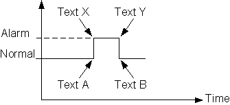
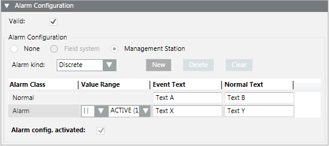
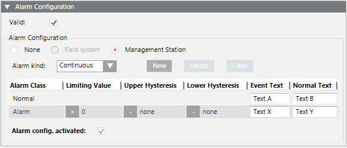

Management Station (MS) Alarms
Management station alarms are instead defined directly in the Desigo CC management platform. This type of alarming requires an engineered project and should only be used as an exception. Wherever possible, define alarming on the automation station.

Management station alarms cannot be forwarded if Desigo CC is not online.
The following alarm priorities are available:
- Life Safety
- Alarm
- Supervision
- General
- Maintenance
- Trouble
- Fault
- Status
Set up a Discrete Digital Alarm
- You want to configure a discrete alarm on a Boolean property that has the Boolean text group assigned.
- In System Browser, select Project > System Settings > Libraries > [... ] > [object model].
- Select the Models & Functions tab.
- In the Properties expander, select the Boolean property on which to configure the alarm.
- Open the Alarm Configuration expander.
- Select the Valid check box to enable the Alarm Configuration fields.
- Select the Management Station option.
- The alarm table displays underneath.
- From the Alarm kind drop-down list, select Discrete.
- In the Normal row, enter texts for Event Text and Normal Text.
- In the second row:
a. Click the Alarm Class field and, from the drop-down list, select the status, for example Alarm.
b. In the Value Range column, select the operand and the related state.
c. Enter the texts for Event Text and Normal Text. - Select the Alarm config. activated check box.
- Click Save
 .
. - The Boolean alarm is created on the management platform. The corresponding MS check box is selected in the Properties overview.


Set Up a Continuous Digital Alarm
- You want to configure a continuous alarm on a Boolean property that has the Boolean text group assigned.
- In System Browser, select Project > System Settings > Libraries > [... ] > [object model].
- Select the Models & Functions tab.
- In the Properties expander, select the Boolean property on which to configure the alarm.
- Open the Alarm Configuration expander.
- Select the Valid check box to enable the Alarm Configuration fields.
- Select the Management Station option.
- The alarm table displays underneath.
- From the Alarm kind drop-down list, select Continuous.
- In the Normal row, enter texts for Event Text and Normal Text.
- In the second row:
a. Click the Alarm Class field and, from the drop-down list, select the status, for example Alarm.
b. In the Limiting Value column, select the operand and the related state.
c. Enter the texts for Event Text and Normal Text.
d. (Optional) Enter an Upper and Lower Hysteresis. - Select the Alarm config. activated check box.
- Click Save .
- The Boolean alarm is created on the management platform. The corresponding MS check box is selected in the Properties overview.

Set up an Analog Management Station Alarm
- You want to configure a continuous alarm on a property.
- In System Browser, select Project > System Settings > Libraries > [... ] > [object model].
- Select the Models & Functions tab.
- In the Properties expander, select the property on which to configure the alarm.
- Open the Alarm Configuration expander.
- In the Alarm Configuration expander, select the Valid check box.
- Select the Management Station option.
- Click New.
- A new line is added to the table.
- From the Alarm Class drop-down list, select the status.
- In the Normal row, enter texts for Event Text and Normal Text.
- In the second row, from the drop-down list, select the status, for example Alarm.
a. In the Value Range column, select the operand and the related values.
b. Enter the texts for Event Text and Normal Text. - Repeat the appropriate entries for each state.
- Select the Alarm config. activated check box.
- The analog alarm is created on the management platform. The corresponding MS check box is selected in the Properties overview.
- Click Save .
For Uint64 data types, if you configure a discrete alert with a range with maximum higher upper limit (that is, specifying the Max Uint 64: 18446744073709551616), you will only see an event if the property value is 2^63 - 1 (9223372036854775807) or lower. Any higher value of the property will not trigger the alert.